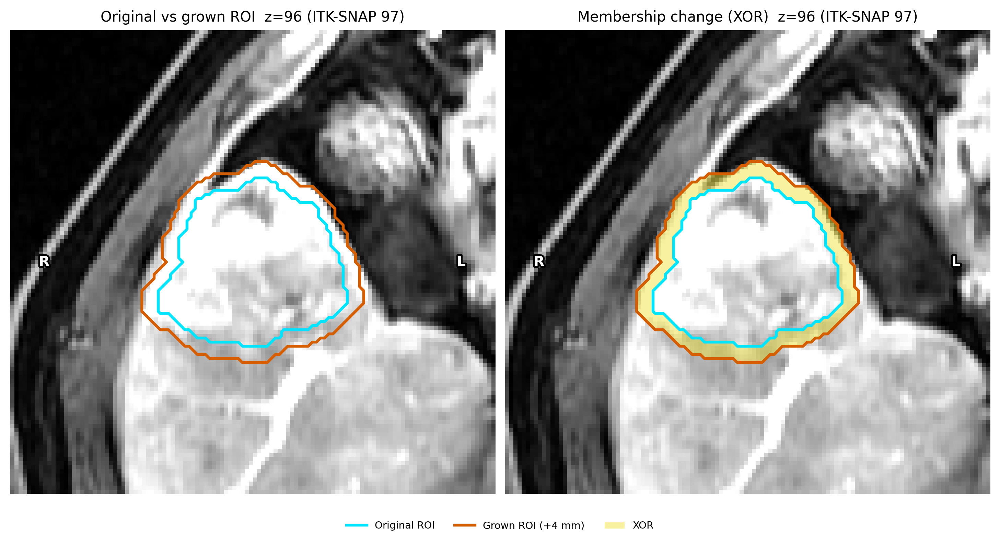
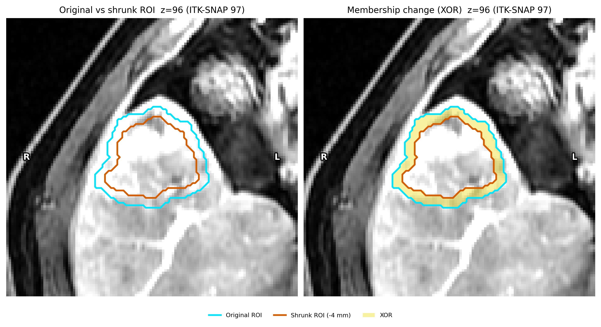
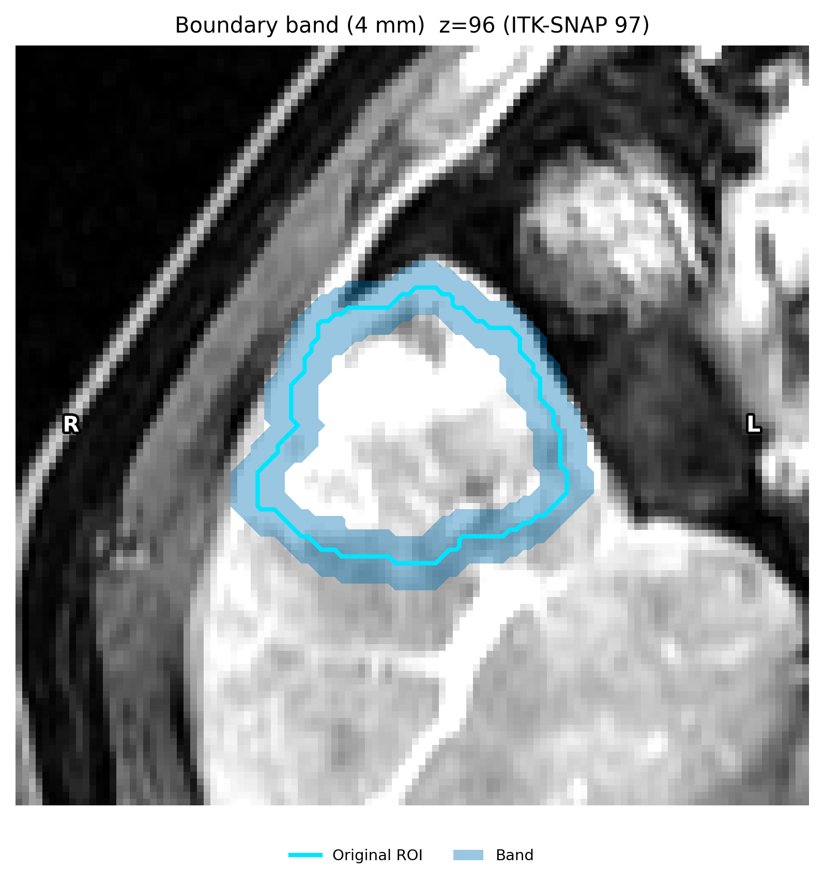
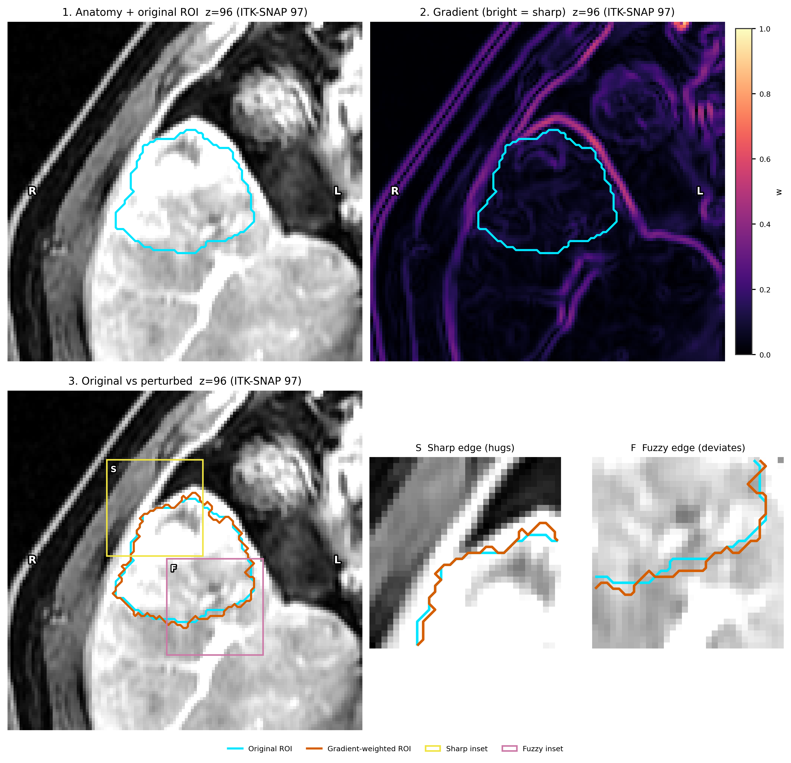
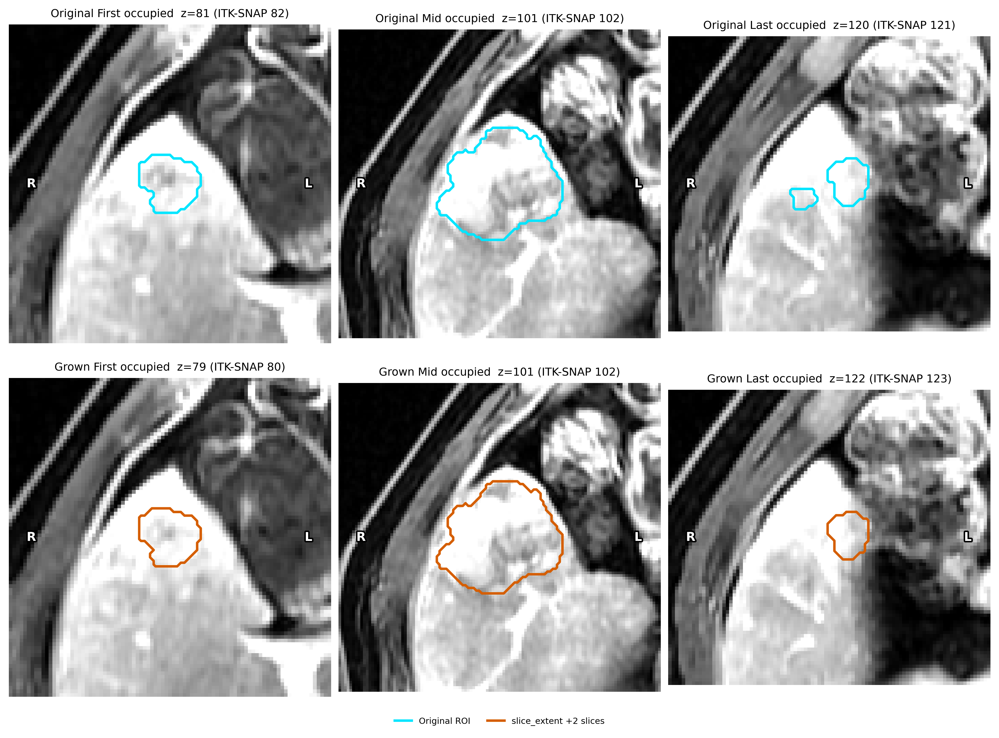

数字内核 (habit.kernels)#
L0 核：纯数值计算——无 IO、无状态、无日志。
内核是 HABIT 独立可审查的数学核心。它们对主题、规格或文件系统一无所知，并且可以独立使用（例如，用于重新推导已发表的度量）。
用户指南： 生境指南 生境 graph network 特征 。纯 NumPy / SciPy 函数。无 Subject 、无 YAML、无 IO。
Classes#
基于图的生境特征提取运行时选项。 |
|
可复现的保度零模型对照。 |
|
观测统计量与保度随机图摘要。 |
|
单个 ICC 的点估计与双侧置信限。 |
Functions#
生境指标#
每个体素邻域内强度直方图的 Shannon 熵。 |
|
统计生境类别之间的面邻接体素对（MSI 矩阵）。 |
|
从空间相互作用矩阵导出 MSI 特征集。 |
|
计算每个生境在非背景体积中的体素占比。 |
|
测量每个生境的连通分量碎片化程度。 |
|
各生境 ITH（离散度），公式与 |
|
计算生境图的 ITH 分数（拓扑碎片化）。 |
|
机会校正的分区一致性（Hubert–Arabie ARI）。 |
|
从生境标签图提取受试者级图特征。 |
|
将生境图限制到选定标签后提取图特征。 |
|
将生境标签图转换为图节点。 |
|
通过连接质心距离在阈值内的节点来构建图。 |
|
通过连接最近体素在阈值内的区域来构建图。 |
|
通过连接空间相邻的生境区域节点构建图。 |
|
返回给定生境标签数量下的成对图数量。 |
|
将有限拓扑统计量与保度零图比较。 |
|
在 ROI 内按标签重分配以移除微小连通分量。 |
模型选择#
返回验证分数的选择规则。 |
|
定位凸递减得分曲线的拐点（Kneedle）。 |
|
BIC 梯度 K： |
以 Prior 2024 |
根据给定的选择规则返回最佳分数的索引。 |
|
将多个验证分数合并为单一的聚类数选择。 |
|
单次聚类的 gap 统计量（Tibshirani、Walther & Hastie，2001）。 |
验证分数 -> 选择规则。 |
|
最佳分数为最大者。 |
|
最优分数为最小者。 |
|
最佳分数位于递减曲线的拐点处。 |
图像扰动与体素可靠性#
估计图像的高斯噪声水平。 |
|
返回 |
|
平移图像： |
按（亚）体素平移图像内容，并在同一网格上重采样。 |
绕图像中心旋转内容，在同一网格上重采样。 |
|
在一次重采样中先平移再旋转（MIRP ≥ 2 仿射复合）。 |
|
均匀膨胀（ |
|
返回前景边界 |
|
在 |
|
在 ROI 上/下端增删整层轴位切片。 |
|
ICC(3A,1)：双向混合效应、绝对一致、单次测量。 |
|
ICC(3C,1)：双因素混合效应、一致性、单次测量。 |
|
ICC(2,1)：双因素随机效应、绝对一致、单次测量。 |
分类与一致性统计#
表格 ML 内核书签。非生境核心。
中位秩： |
计算中间排名（对相同值取平均排名）。 |
计算一个或多个分类器的 AUC 及 DeLong 协方差。 |
|
计算单条分数向量的 ROC AUC 及其 DeLong 方差。 |
|
计算两个 ROC AUC 是否不同的假设 p 值 |
|
计算 ROC AUC 及其 DeLong 置信区间。 |
|
对二类结局执行 Hosmer-Lemeshow 校准检验。 |
|
对二分类结局执行 Spiegelhalter Z 校准检验。 |
|
双因素均方： |
计算双因素布局的行/列/误差均方。 |
ICC(3,1)： |
计算 ICC(3,1)：双向混合模型，一致性，单次测量。 |
计算 ICC(2,1)：双向随机模型、绝对一致、单次测量（pingouin 的 |
from habit.kernels import (
HabitatGraphFeatureOptions,
delong_roc_ci,
delong_roc_test,
delong_roc_variance,
extract_graph_features,
fast_delong,
habitat_ith_dispersion,
habitat_region_stats,
habitat_volume_fractions,
hosmer_lemeshow_test,
icc2_1,
icc3_1,
icc3a_1,
icc3c_1,
ith_score,
msi_features_from_matrix,
spatial_interaction_matrix,
spiegelhalter_z_test,
two_way_mean_squares,
compute_midrank,
)
生境指标（示例）#
import numpy as np
labels = np.zeros((16, 32, 32), dtype=np.int32)
labels[4:12, 8:24, 8:24] = 1
labels[6:10, 12:20, 12:20] = 2
matrix = spatial_interaction_matrix(labels, n_classes=3)
msi = msi_features_from_matrix(matrix) # dict[str, float]
ith = ith_score(labels) # float
fractions = habitat_volume_fractions(labels, habitat_ids=(1, 2))
stats = habitat_region_stats(labels) # id -> (n_regions, largest)
dispersion = habitat_ith_dispersion(labels) # id -> per-habitat ITH
图拓扑内核#
区域图 + NetworkX 指标（与内置 graph 生境特征族定义相同）。数组进、 dict 出 — 无 YAML / IO。
from habit.kernels import HabitatGraphFeatureOptions, extract_graph_features
options = HabitatGraphFeatureOptions(
edge_method="min_distance",
node_method="uniform_grid",
block_size=8,
distance_threshold=5.0,
erosion_radius=0,
)
graph_feats = extract_graph_features(
labels,
options=options,
expected_labels=(1, 2),
)
# Keys look like single_h1_n_nodes, pair_h1_h2_modularity, ...
另导出：extract_graph_features_for_labels() 、extract_habitat_nodes() 、build_centroid_distance_graph() 、build_min_distance_graph() 、build_adjacency_graph() 、pair_count() 。见 图拓扑特征 。
ICC 核#
# n_targets x k_raters design matrices of mean squares helpers
ms = two_way_mean_squares(n_targets, k_raters)
icc_agreement = icc2_1(n_targets, k_raters)
icc_consistency = icc3_1(n_targets, k_raters)
体素级可靠性（精筛统计量）返回带点估计与置信限；负值截断为 0：
# matrix: n_voxels x n_conditions, one column per condition
est = icc3a_1(matrix) # absolute agreement -> ICCEstimate(value, lcl, ucl)
est = icc3c_1(matrix) # consistency
图像扰动#
image_perturbation 域背后的模拟重测内核。噪声估计与加噪作用于普通数组；几何内核接收并返回 sitk.Image 以保留 spacing、origin 与 direction，并重采样回原网格。默认配方链对齐 Prior 等（ Radiol Artif Intell 2024;6(2):e230118，附录 S2 / MIRP 1.2.0）：Chang 估计高斯噪声、0.5 体素平移比例、0.5° 平面内旋转。rigid_transform_image() 将平移+旋转合成为一次仿射（MIRP ≥ 2）。
from habit.kernels import (
add_gaussian_noise,
boundary_band_mask,
boundary_weighted_perturbation,
estimate_noise_sigma,
morphological_grow_shrink,
rigid_transform_image,
rotate_image,
slice_extent_perturbation,
translate_image,
)
sigma = estimate_noise_sigma(array, method="chang") # wavelet estimator
noisy = add_gaussian_noise(array, sigma, rng) # zero-mean Gaussian
shifted = translate_image(image, shift_voxels=(0.3, -0.2, 0.0))
rotated = rotate_image(image, angle_degrees=0.5, axis="z")
# MIRP ≥ 2: translation + rotation in one resample
rigid = rigid_transform_image(image, (0.5, 0.5, 0.5), angle_degrees=0.5)
# Mask-only contour kernels (image intensities are never touched).
grown = morphological_grow_shrink(mask, grow_mm=4.0, spacing_xyz=spacing)
band = boundary_band_mask(mask, band_mm=4.0, spacing_xyz=spacing)
local = boundary_weighted_perturbation(mask, weights, rng, max_radius_voxels=3)
ends = slice_extent_perturbation(mask, grow_slices=2)
受试者级包装（ morphological 、 gradient_weighted 、 slice_extent ）位于 ImagePerturbationRegistry 。可复制演示与图：在扰动下精确特征与所有纹理 。


morphological_grow_shrink() via the
morphological registry name (grow +4 mm). Same PNG as the
gallery script contour_perturbation_demo.py.#


同一核，负半径（收缩 -4 mm）。#


boundary_band_mask() （4 毫米半宽）。#


经 gradient_weighted 调用 boundary_weighted_perturbation() 。解剖结构、梯度（亮=锐利）、青与朱红实线轮廓，以及 sharp / fuzzy 插图。翻转概率随 1 - normalised_gradient 缩放。#


通过 slice_extent （ grow_slices=2 ）调用 slice_extent_perturbation() 。#
分类统计#
midranks = compute_midrank(scores)
auc, var = fast_delong(predictions_sorted)
result = delong_roc_test(y_true, scores_a, scores_b)
ci = delong_roc_ci(y_true, scores)
var_ab = delong_roc_variance(y_true, scores_a, scores_b)
hl = hosmer_lemeshow_test(y_true, scores, n_groups=10)
sp = spiegelhalter_z_test(y_true, scores)
生境标签匹配#
独立聚类的地图会重新排列整数ID。直接导入内核（它没有从 habit.kernels 重新导出）。有两种匹配器，取决于地图共享的内容：
overlap ——两图标注相同体素（观察者、重测、扰动、另一预处理链）：对体素重叠做匈牙利匹配，
match_labels_by_overlap()。域封装：align_habitat_map()、habitat_stability()。原型 — 各图标注不同患者：
match_rows_to_prototypes()（K = 最大生境数，迭代分配/更新，每个原型在每个受试者上对应一个生境）。metric为"sqeuclidean"（默认，均值更新）、"manhattan"（中位数）、"cosine"或"correlation"（单位向量均值）；max_distance（默认关闭）允许部分分配；prototypes=冻结已训练集合。两名受试者是平方欧氏距离上成对 Hungarian 的特例。特征量纲不同时先用fit_feature_match_scale()重缩放列。领域包装：align_habitat_maps_to_prototypes()。方法与参考文献：匹配生境标签 。
可复制演练（均为原型匹配）：同一受试者、两次拟合：原型匹配 、两名受试者、相同 Spec：原型匹配 、一步法组拟合：原型匹配 。
from habit.kernels.habitat_label_match import (
match_labels_by_overlap,
match_rows_to_prototypes,
)
# Same tumour, two observers: overlap.
mapping = match_labels_by_overlap(physician2_labels, other_labels)
# Different patients: one (n_habitats, n_features) block per patient,
# habitat counts may differ. result.assignments[s][i] is the prototype
# index of habitat row i of patient s.
result = match_rows_to_prototypes([patient_a, patient_b, patient_c])
# A new patient named with the trained prototypes (no refit).
new = match_rows_to_prototypes([patient_d], prototypes=result.prototypes)
Stability#
已发表指标（MSI、ITH、ICC、DeLong、Hosmer–Lemeshow、Spiegelhalter）在 v1.x 内为 稳定 子集。